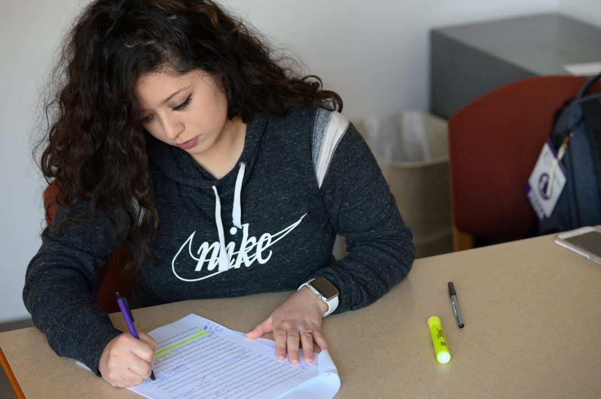

By Julie Freijat
Nov 10, 2019
Tucked away on a cold and windy Wednesday evening, a group of writers gathered inside the third floor of the K-State Student Union. They sat around a table with their laptops out, critiquing and complimenting each other’s writing.
This group, called the Quill Club, is dedicated to workshopping creative writing. Stephanie Wallace, club president and graduate student in English, said prior to this group she was involved in a different club called Creative Writing Enthusiasts at Kansas State during her undergraduate years.
“At the time, [Creative Writing Enthusiasts] was very graduate-student focused,” she said. “It would only meet like once a month, if that, and their focus was mostly on going to writing conventions or writing conferences, more of the professional development stuff. And so, I tried to be happy with it as it was.”
Wallace said she wanted to create an independent organization more focused on workshopping writing, so she formed Quill Club.
"it’s my belief that the author always should have final say.”
Wallace said she decided to name the group Quill Club after flipping through old yearbooks and discovering a similar club with the same name that existed at K-State decades ago.
“It was all devoted to sharing writing; it was actually more essay focused rather than creative writing focused, but it served as a proving ground for people to show their work, debate whose work was best — because they were really into debate clubs back then — but I just really liked the idea of taking that old name and repurposing it for our current group,” Wallace said.
Wallace said workshops in Quill Club are different from the workshops in classes on campus because they don’t look at the piece as a final product so much as a work in progress.
“When you bring it to the workshop class, the author is not allowed to speak — they must be completely silent while the entire classroom debates what should be changed [and] what they liked,” Wallace said.
“So, everyone has a chance to give that feedback, but the author cannot talk or offer what they wanted for that vision,” she said. “Because in the workshop classroom, it’s just assumed that all the students know better than the author or that the teacher knows better than what the author wants on the standards of quality. Whereas, it’s my belief that the author always should have final say.”